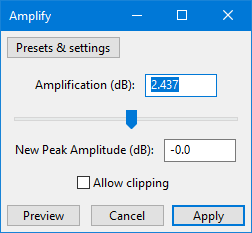

Amplify
- Amplify always preserves the relative volumes of the tracks and/or channels
- all selected tracks are amplified by the same amount, they are not amplified to the same level as is the case with Normalize.
| You can also use the "Amplification (dB)" box in Amplify as a quick check of the current peak level of the selection. |
Note carefully that when you apply an effect to a time-stretched clip the changed speed of the clip will be automatically rendered.
|
- Accessed by:
- 
When applied to a single stereo track or to multiple tracks, Amplify shows the amplification needed to maximize the volume of the loudest track or channel and will apply that amount of amplification to all selected tracks and/or channels. In this way, Amplify preserves the relative volumes of the selected tracks and/or channels.
This is different from the Normalize effect which maximizes the volume of each track independently and can be optionally set to maximize the volume of each channel independently. For a full discussion of the differences, see Amplify and Normalize.
Amplification (dB)
When the Amplify dialog first appears it shows in the Amplification (dB) box the amplification amount needed to create a New Peak Amplitude of 0 dB, thus maximizing the volume of the selected track. If this is your goal you can just click the button.
- Input Box: Type a value for the amount of amplification you would like to apply. Positive values make the sound louder, negative values make it quieter. As you type, the New Peak Amplitude input box will be updated.
- Slider: Drag the slider right to make the sound louder, or to the left to make it quieter. As you drag, your selected value will be updated in the input box, and the New Peak Amplitude input box will be updated.
New Peak Amplitude (dB)
Type in the value you would like for the new peak amplitude of your selected tracks. As you type, the Amplification input box will be updated.
Allow Clipping
If this box is not checked, and you attempt to enter an Amplification value that will result in a New Peak Amplitude of greater than 0 dB, the OK button will become inactive. This will prevent you from applying too much amplification. If this box is checked (default setting) you can apply as much amplification as you want, possibly creating a horribly distorted sound.